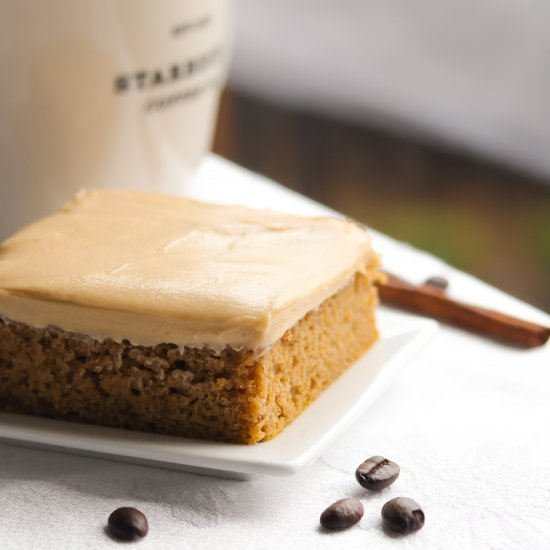

Pumpkin Spice Latte Bars

Description
This creamy treat has got it all — a layer of coffee cheesecake with a layer of pumpkin cheesecake and a buttery graham cracker crust.
Top this luscious spin on another fall staple, the beloved PSL, with some whipped cream and pumpkin pie spice for a decadent fall dessert.
Ingredients
- 1 ½ cups crushed graham crackers
- 6 tablespoons butter, melted
- 1 (8 ounce) package cream cheese, softened
- 1 egg, lightly beaten
- ¼ cup white sugar
- ½ teaspoon espresso powder
- ½ teaspoon vanilla extract
- ½ cup canned pumpkin
- 1 teaspoon pumpkin pie spice
- ½ teaspoon ground cinnamon
Steps
- Preheat oven to 350 degrees F (175 degrees C). Line an 8-inch baking pan with parchment paper, ensuring there is an overhang on both sides.
- Mix graham crackers and butter together in a bowl. Press over the bottom of the lined baking pan to make a crust.
- Beat 8 ounces cream cheese in a bowl with an electric mixer until smooth and creamy. Add 1 egg, 1/4 cup sugar, espresso powder, and 1/2 teaspoon
vanilla extract; beat until blended and smooth. Pour latte layer over the graham cracker crust and smooth with a spatula. Clean beaters.
- Beat 8 ounces cream cheese in another bowl until smooth and creamy. Add pumpkin, 1 egg, 1/4 cup sugar, pumpkin pie spice, 1/2 teaspoon vanilla extract,
and cinnamon; beat until blended and smooth. Pour over the graham cracker crust and level with a spatula. Pour pumpkin layer over the latte layer
and smooth with a spatula.
- Bake in the preheated oven until center is just set, 40 to 45 minutes. Cool for about 30 minutes. Cover loosely with aluminum foil.
Refrigerate until firm, 3 to 4 hours.
- Lift bars out of the pan using the parchment paper overhang. Cut into bars using a hot, wet knife.
Previous
Return to main page